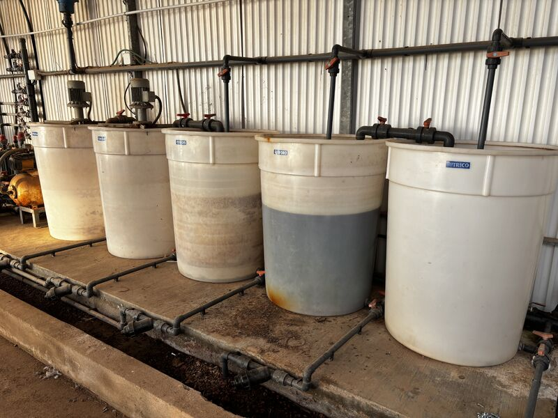

↓ 30%
Wasserverbrauch
Bewässerungsoptimierung basierend auf realen Boden-, Klima- und Erntebedingungen.
Qartia verwandelt den Anbau in ein vernetztes, vorausschauendes und energieeffizientes System durch IoT, künstliche Intelligenz, digitale Zwillinge, Agri-PV und private Netzwerke.
Bewässerungsoptimierung basierend auf realen Boden-, Klima- und Erntebedingungen.
Bessere agronomische Anpassung und größere Fähigkeit zur operativen Antizipation.
Reduzierung der Wasser-, Düngemittel-, Energie- und Betriebskosten.
Technische und wirtschaftliche Validierung in Monaten, nicht in langen Zyklen der Unsicherheit.
Kontinuierliche Überwachung der Ernte, des Mikroklimas und der Infrastruktur.
Vorhersage des Wasser-, Nährstoff- und Energiebedarfs.
Simulation von Szenarien zur Optimierung von Entscheidungen ohne Betriebsrisiko.
Gleichgewicht zwischen Solarenergie, Schatten, Licht und landwirtschaftlicher Leistung.
Zuverlässige Konnektivität auf Bauernhöfen, Gewächshäusern und abgelegenen Gebieten.
Geringerer Verbrauch von Wasser, Düngemitteln, Energie und Betriebskosten.
Sensoren IoT → Privates Netzwerk → Edge / Cloud → KI + Digitaler Zwilling → Dashboard / Aktoren
Die Plattform kann in einer Cloud-, On-Premise- oder Hybridarchitektur bereitgestellt werden und sich in vorhandene Sensoren oder mit einer eigenen Bereitstellung integrieren Qartia.

Qartia ermöglicht es Ihnen, Agrar-PV-Systeme zu entwerfen und zu betreiben, die landwirtschaftliche Produktion und Solarenergie in Einklang bringen.
Pflanzenauswahl, Nutzung, Infrastruktur und KPIs.
Installation von Sensoren, Validierung der Abdeckung und Datenqualität.
Vorhersagemodelle, umsetzbare Warnungen und technische Empfehlungen.
Wirkungsbericht, Wirtschaftsvorschlag und Umsetzungsplan.
Fordern Sie ein Qartia-Pilotprojekt an und validieren Sie die technischen und wirtschaftlichen Auswirkungen auf Ihren Betrieb, indem Sie Anbau, Infrastruktur und Energie in derselben Betriebsebene integrieren.
Calle Tolosa Latour, 4, 7ºA,
30201, Cartagena, Spanien
CIF: B67916676
In HTML erstellte Broschüre zur digitalen Präsentation oder zum Drucken als PDF.